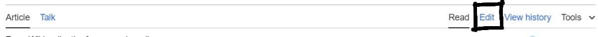
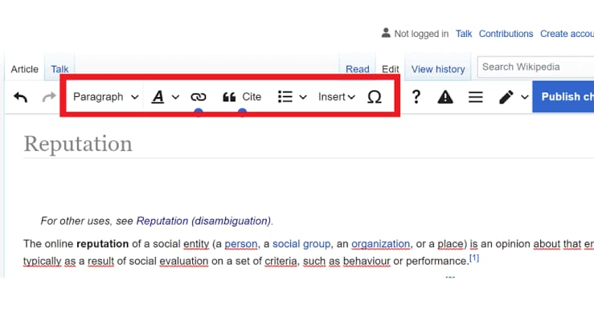

How do I edit a page?
To edit the whole page, click the "edit" tab at the top. To edit just one section, click the "edit" link to the right of the section heading.
 The above picture shows the available tools and components which can be used in oreder to edit the article.
Any other queries